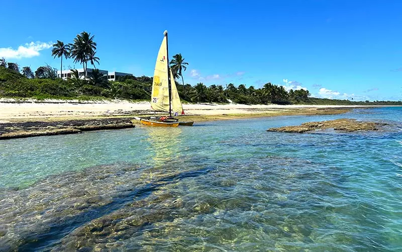
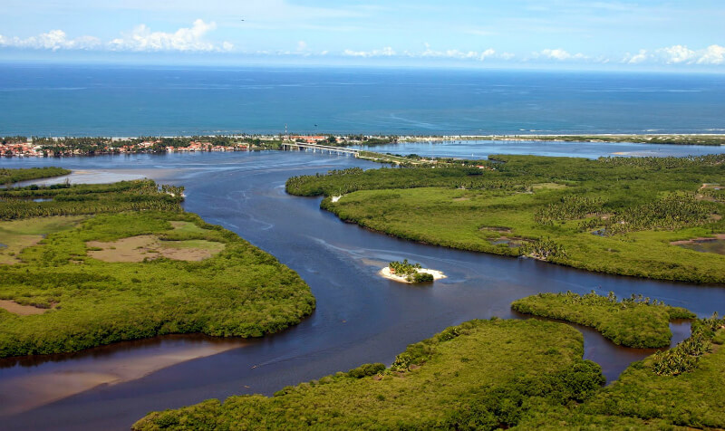
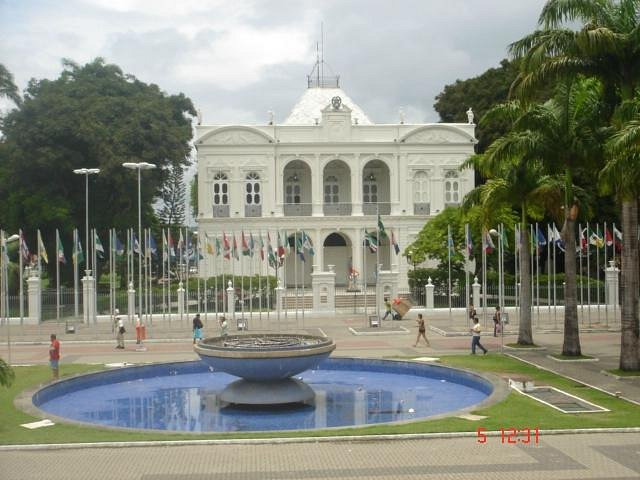

Maceió, a capital encantadora de Alagoas, é um destino que combina beleza natural, cultura rica e uma hospitalidade acolhedora. Conhecida por suas praias deslumbrantes, lagoas de águas cristalinas e clima tropical perfeito o ano inteiro, a cidade oferece um verdadeiro paraíso para os amantes de turismo, seja para relaxar à beira-mar ou explorar sua história e gastronomia local.
🌅 Motivos para Visitar
| Praias paradisíacas | Maceió é famosa por suas praias de águas cristalinas e areias brancas. Algumas das mais conhecidas incluem a Praia do Francês, Praia do Carro Quebrado, Pajuçara e a Praia do Ipioca. |
| Lagoas | As lagoas de Maceió, como a Lagoa do Mundaú e a Lagoa do Maceió, são perfeitas para quem gosta de relaxar, fazer passeios de barco ou praticar esportes aquáticos. |
| Cultura e História | Maceió tem um centro histórico interessante, com edifícios coloniais, igrejas antigas como a de São Gonçalo do Amarante, e o Museu Palácio Marechal Floriano Peixoto. |
| Culinária | A comida local é deliciosa, com pratos típicos como sururu ao coco, carne de sol com macaxeira e o famoso bolo de rolo. Não deixe de experimentar a tradicional tapioca. |
🌟 Atrações Imperdíveis
1. Praia do Francês
A Praia do Francês é uma das mais famosas de Maceió, famosa por suas águas cristalinas e ondas perfeitas para o surfe. Ideal para quem busca um dia de sol, descanso e diversão.
Saiba mais sobre a Praia do Francês
2. Lagoa do Mundaú
A Lagoa do Mundaú oferece passeios de barco e vistas deslumbrantes. Além disso, você pode explorar o famoso Mercado do Artesanato, que fica às margens da lagoa.
Saiba mais sobre a Lagoa do Mundaú
3. Museu Palácio Marechal Floriano Peixoto
O Museu Palácio Marechal Floriano Peixoto é um importante ponto turístico de Maceió, com exposições sobre a história do estado e arquitetura colonial.
🍽️ Gastronomia de Maceió
Comidas Típicas
- Sururu ao coco: Marisco típico preparado com leite de coco e temperos regionais.
- Caldo de sururu: Muito apreciado em feiras e praias.
- Carne de sol com macaxeira: Tradicional prato nordestino muito popular na cidade.
- Chiclete de camarão: Camarão cremoso com queijo, muito servido em restaurantes locais.
- Tapioca recheada: Pode ser doce ou salgada, encontrada em diversas barracas e feirinhas.
- Bolo de goma: Biscoito crocante feito à base de polvilho.
Restaurantes Recomendados
- Imperador dos Camarões: Famoso pelo "Chiclete de Camarão" e pratos à base de frutos do mar.
- Bodega do Sertão: Restaurante com comida regional em ambiente rústico e cultural.
- Parmegiano: Ótimo para massas e frutos do mar, com várias unidades pela cidade.
- Wanchako: Restaurante peruano renomado, ideal para quem busca algo diferente.
- Restaurante Lampião: Comida nordestina típica com apresentações culturais em alguns dias.